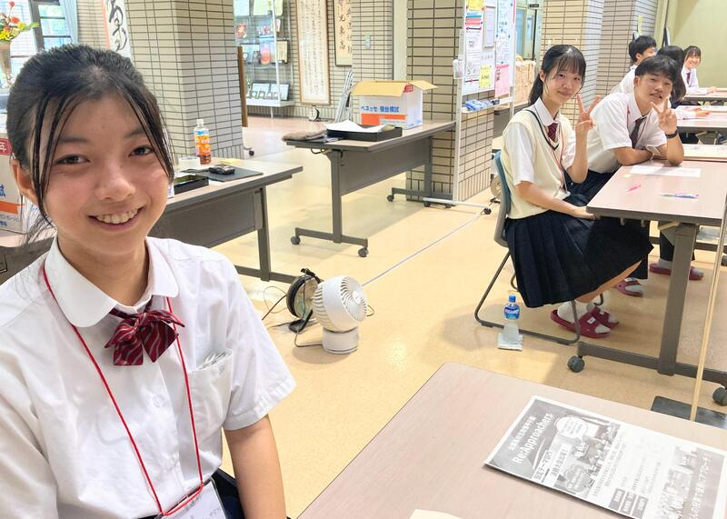

SAGANO BLOG
- >
- SAGANO BLOG
- >
- 中学生向け
2025年02月28日

京・平安文化論ラボです！
今年度、最後の取組、鍵善良房様とのコラボ商品の和菓子が完成しました！
『源氏物語』の最後の十帖は、宇治が舞台となっています。
浮舟という女性が、薫と匂宮（におうのみや）という二人の男性に挟まれ、三角関係となって恋物語が進んでいきます。
詳しい内容は、和菓子に説明書をお付けしておりますので、ぜひお読みいただきたく思います。
浮舟と薫をイメージした「流水花」（写真左）
浮舟と匂宮をイメージした「漂揺」（写真右）
デザインにこだわり、それを形にしていただきました。
４日間限定です！ぜひお召し上がりください！
日時：３月１日（土）、２日（日）、２９日（土）、３０日（日）
場所：重要文化財 旧三井家下鴨別邸様
費用：１，０００円（税込）です。（入館料の６００円は、別途必要です。）
事前申し込みは不要です。
旧三井家下鴨別邸様のHPはこちらから！
https://ja.kyoto.travel/event/single.php?event_id=11556
2025年02月25日
2月13日（木）、韓国の全南科学高等学校から生徒14名と教員11名が来校し、本校生徒と交流しました。全南科学高は、韓国において科学に特化した教育を行う高校で、卒業生の多数が韓国科学技術院（KAIST）等の名門大学に進学するトップ高の１つです。
１限は、２年専修コースの生徒と探究成果の発表を通じた交流を行いました。嵯峨野高、全南高からそれぞれ２件ずつ、英語によるプレゼンテーションと活発な質疑応答が交わされました。

２限は、１年８組の生徒とともに、プラネタリウムを用いた授業を体験しました。
３限は、２年専修コースのスーパーサイエンスラボⅡ（SSLⅡ）を自由に見学し、研究に関する質疑応答や議論による交流を行いました。

４限は１年１組のグローバルインタラクション（GI）の授業において、日本の伝統的な遊びを体験するなど、ともに楽しみました。

昼休みには、本校校長による Welcome Ceremony 後、２年生の国際交流委員とランチを食べながら歓談しました。
午前中だけの短い時間でしたが、大変楽しんでもらい、教員の方にも「感動した！（"Impressive !"）」とのコメントをいただくことができました。今後も交流が続くことを楽しみにしております。
2025年01月31日
シンギュラリティバトルクエスト2024の決勝戦が１月18日・19日に開催され、嵯峨野高校コンピュータ部の1年生からなるチーム「文系人狼」がXクエストで全国１位を、チーム「Mr.4K」がサイバークエストで全国４位をそれぞれ獲得しました。
シンギュラリティバトルクエストとは、高校生がAI/ICTのスキルを競う大会で、文部科学省などが後援しています。従来の５競技(AIクエスト、サイバークエスト、データクエスト、ロボクエスト、Xクエスト)に加え、今年はXクエスト02などの競技が追加されました。
今回のXクエスト決勝戦の課題は、七並べAIの作成でした。囲碁のように相手の状態が全て見えるゲームでは、既にアルファ碁のようなAIがプロ棋士に匹敵する性能を発揮していますが、相手の状態について不完全な情報しか得られない七並べのようなゲームでは、まだまだAIを研究する余地があります。
Xクエストの試合では、各チームの作成したAIが6000回対戦を繰り返し勝率を競いました。嵯峨野高校のチームは、接戦を制して見事全国１位を獲得しました。

サイバークエストは、情報セキュリティに関するクイズ形式の問題を、セキュリティの知識やソフトを駆使して、隠された言葉(Flag)を見つけるCTF形式の競技です。嵯峨野高校のチームはリベンジャーズ枠から出場し、２日にわたる戦いの結果見事全国４位を獲得しました。

応援ありがとうございました！
2025年01月20日

京・平安文化論ラボです！
嵯峨野高校生による古典入門講座を行います！
高校生の目線で、古典の魅力をお伝えしたいと考えています。
講座の前後に、鶴屋吉信様と京・平安文化論ラボとのコラボ商品である羊羹（枕草子モチーフ「春はあけぼの」、源氏物語モチーフ「紫の想ひ」）を召し上がっていただきます。
日時：２月８日（土）、９日（日）の２日間 ２部制（入れ替え制）
１部は、１３：３０～ ２部は、１５：００～
場所：重要文化財「旧三井家下鴨別邸」様
内容：主に『源氏物語』と『枕草子』をテーマにしています。
２月８日（土）は、①古事記、②桐壺更衣、③藤壺、④紫の上、⑤枕草子
２月９日（日）は、①葵の上、②末摘花、③朧月夜、④明石の君、⑤光源氏、⑥枕草子
というラインナップです。
参加費：１,２００円（税込）です。（入館料の６００円は、別途必要です。）
下鴨神社の糺の森にたたずむ旧三井家下鴨別邸様の美しいお庭を見ながら、楽しい時間を過ごしてみませんか？
お申し込みは、こちらからどうぞ！
https://ja.kyoto.travel/event/single.php?event_id=11296
京・平安文化論ラボ一同、皆様のご参加をお待ちしております！
2024年11月18日
１１月１６日（土）に「中学２年生以下対象説明会」を本校にて開催しました。
当日は、１０００名を超える多くの方々に参加していただき、誠にありがとうございました。
全体会では、本校の教育内容の説明や生徒による学校生活についてのプレゼンテーションを行い、その後、施設見学や個別相談等を実施しました。
全体会の様子
また、来校される方々のために、広報委員の企画係が中心となり、毎回様々な企画を実施しています。
本年度の企画は、「学校紹介のチラシ作成」・「嵯峨野高校生によるQ＆Aのチラシ作成」・「受験期ノートの展示」・「ラボ活動・イベント紹介のチラシ作成」で、どの企画も１ヶ月ほど前から準備を始め、実現することができました。
今回で本年度の広報委員の活動は終了です。
７月からすべての学校説明会の運営に協力し、生徒相談や施設見学などでは、笑顔でいきいきとした姿を見せ、積極的に行動することができました。
広報委員の様子

次回は、１２月７日（土）に個別相談会を開催予定です。
2024年10月30日
10月21日、京都大学大学院農学研究科の丸岡毅さんに御来校いただき、本校の専修コース２年生に表題のタイトルで御講義いただきました。丸岡さんは、本校の2014年度卒業生で、現在は博士後期課程で化学生態学を専攻しています。
丸岡さんは、「蛾のフンからお茶をつくる」というユニークな研究が注目されており、その成果の1つとして商品化された「虫秘茶」は、一流の料理人にも高く評価されています。メディアからも注目され、NHKの人気番組にも出演されました。


今回は、さまざまな葉を餌とした蛾の糞のサンプルの意外な良い香りに驚かされたあと、蛾が葉を消化する過程で起こることや、虫の種類によって生じる違いなど詳細な分析結果について御講義いただきました。また、分析に用いた機器とその測定原理についても詳細に説明いただき、現在の学びが将来の研究につながっていることを実感できました。

御講義後は、研究内容の他、なぜ博士課程に進まれたのか等、様々な質疑応答が行われ、これからの進路を考えるにあたって大変有意義な時間となりました。
2024年10月09日
アカデミックラボ「京・平安文化論」です。
今年も『源氏物語』の魅力を知っていただくことを目的に、
「ちゅう源氏と巡る 源氏物語 京都スタンプラリー」を実施します。
『源氏物語』に関係する神社仏閣を巡り、その世界に触れていただきたいと考えています。
秋の京都をお楽しみください。
【日程】
１０月２６日（土）、２７日（日）
１１月２日（土）、３日（日）、４日（月休）の５日間です。
【場所】
スタンプ設置場所は、京都市内の『源氏物語』ゆかりの神社仏閣１２ヵ所と特設会場です。
➀京都御苑 ➁下鴨神社 ③上賀茂神社 ④雲林院 ⑤仁和寺 ⑥清凉寺
⑦野宮神社 ⑧天龍寺 ⑨廬山寺 ⑩清水寺 ⑪渉成園 ⑫東寺
〔特設会場〕古典の日フォーラム２０２４ （事前に応募された方のみ）
【台紙の配付】
・本校事務室
・京都市バス・京都バスの車内
・神社仏閣１２ヵ所（特設会場は除きます）
【景品】
スタンプを３つ集めると、オリジナルコットンバッグをプレゼント！
最新情報は、X（旧twitter）やInstagramでお知らせします。
X ＠kyo_heian_labo
Instagram @kyo_heian_labo です。
ぜひご参加ください！
京・平安文化論ラボ一同、お待ちしています！
2024年09月14日

本日は嵯峨野高校の進学説明会でした。
そこで活躍するのが、広報委員さんたちです！
綺麗な校舎や設備はもちろんですが、嵯峨野の自慢はなんと言っても生徒たち。
.jpg)

今年のパンフレットも生徒デザインによるものですが、もちろん司会も生徒が務めます。
そこで驚いたのがこの写真。
彼女たちは自分の出番でないときも、来場者に目を配り、背もたれに背中をつけることはありませんでした。
これは...教員ながら頭が下がります。嵯峨野高校では生徒から教わることもたくさんあります。
大変よく頑張ってくれました。
見学会終了後、広報委員さんたちの頑張りを讃える校長先生。頬が緩んでいます。
中学生の皆さん！こんな先輩方と一緒に学校生活を過ごしてみませんか？
また嵯峨野高校で会おうね！！
2024年09月11日


.png)


華道部です。
私たちは、小原流の先生にご指導いただいてお稽古しています。
２年生５名、１年生５名で、日々楽しく活動しています。
文化祭で、作品展示を行いました。
そして今年は、より多くの方に華道の魅力を知っていただくため、「生け花体験」を行いました。
基本の、たてるかたちです。
ご参加いただいた皆さんは、とても上手に生けておられました。
「お花を生けるのは初めですが、上手にできました」
「楽しかった」「癒やされました」
という声をいただきました。
見て楽しむだけでなく、花の美しさを引き出すことができる生け花を体験していただきました。
四季折々の草花を通じてその美しさをしることができる部活動です。
初心者大歓迎です！
2024年08月26日
2024年8月4日から9日まで、本校生徒が韓国全羅南道州の麗水市にある全羅南道州教育庁国際教育院に滞在し、日韓高校生グローバル公民権プロジェクトのサマーキャンプに参加しました。国際教育院は多文化教育に特化した教育施設であり、国内外から教員や児童生徒が集まり研修を行います。
このプロジェクトはオンラインで月に1回程度実施されており、サマーキャンプはそのプログラムの一環として対面で実施されたものです。参加したのは、全羅南道州にある高校の生徒、日本からは嵯峨野高校他3校の生徒総勢約40名でした。プログラムの内容はグローバル課題に関するもので、国際教育院所属の教員によって開発されており、生徒同士のやりとりも含めプログラムは全て英語で実施されました。また全生徒が国際教育院の寮に滞在し生活を共にしました。生徒は講座や寮での生活を通じて、英語でのコミュニケーションやグローバルリーダーとしての素養を育むことができました。12月には今回の研修に参加した韓国の生徒が嵯峨野高校を訪問する予定です。


以下では簡単に研修内容について紹介します。
8月4日 出国日
1時間程度のフライトの後、釜山空港に到着しました。そこからバスで2時間30分移動したところにある全羅南道国際教育院に向かいました。施設内には世界の衣食住の文化を紹介する多文化共生教育ならではのコーナーがありました。地元の食堂で夕食を済ませた後、寮に戻りました。
8月5日～8月9日 日韓高校生グローバル公民権プロジェクトサマーキャンプ
8月5日の午前中は開会式とアイスブレイクを行いました。その中で、生徒は研修を共にするグループとバディを決め、緊張した面持ちで自己紹介を行っていました。8月5日の午後以降はグローバルリーダーシップの育成を目指す様々な講座、文化施設や商業施設を訪れるフィールドワーク、生徒間の交流を深めるイベント等が実施されました。以下ではその中からいくつかをご紹介します。
Global Food Culture
この講座では、世界の食文化や我々が普段から慣れ親しんでいる食材のルーツについて学びました。その後、生徒には世界各国の食材を使用した新しい麺料理を考え、実際にそれを作るという課題が与えられました。どのような料理を作るかスムーズに決められないグループや、料理が決まっても調理過程で上手くコミュニケーションができず、作業が進まないグループもありました。しかし間違いを恐れず積極的に意見を伝えようとしたり、指示を出そうとしたりする姿を見せる生徒もいました。即興で料理を考えて、それを作ることは生徒にとって難しい課題でしたが、難しいからこそ生徒には積極的な意見交換や協働することが求められました。この講座では食文化だけでなく、異文化の人々との協働とその難しさについても学べたようでした。

フィールドワーク: 順天湾ガーデン
フィールドワークの1つとして順天湾ガーデンを訪れました。順天湾ガーデンは2023年に国際庭園博覧会が開催されており、博覧会以降も多くの観光客が訪れるスポットになっています。生徒はグループで世界各地の美しく整備された庭園、湖、丘、そして何千本もの花や木々を鑑賞していました。
Talent Show Prep & Talent Show
講座に加え、生徒間の交流と異文化理解を深める活動も実施されました。この活動では、10人程度のグループに分かれてＫポップダンスを一緒に練習し、その踊りを披露しました。韓国の生徒が提案してくれた曲の一つに日本のとても有名なアニメの主題歌がありました。韓国における日本のアニメ文化の認知度の高さを知る一場面でした。生徒は意思疎通が上手くできない時も、互いの国の文化をきっかけに話が盛り上がったり、関係性を深めたりしていました。研修を通じて、国を超えて人を繋ぐ文化の偉大さをどの生徒も身を持って理解できたと思います。
Closing & Farewell Ceremony
閉会式では、講師から一人ひとりに修了証書が渡されました。「この閉会式は関係性の終わりではなく、将来続いていく友情の始まりです。この機会に感謝し、関係性を続けていってください」との言葉があり、多くの生徒は大きく頷きながら聞いていました。また自ら手を挙げ、みんなの前で涙ながらに感謝を伝える生徒や感謝の思いを書いた手紙を渡す生徒の姿を見て、今回の研修が生徒にとって非常に有意義であったかが伝わってきました。

8月9日〜8月10日 フィールドワーク：釜山・帰国日
国際教育院での閉会式を終え、空港がある釜山に移動しました。釜山ではナマク高校の生徒と合流し、釜山の市場や観光スポットを案内してもらいました。のどかなリゾート地であるヨス市とは異なり、巨大なビルや商業施設が立ち並ぶ釜山を生徒たちは楽しんでいました。

最後に
研修が進むにつれて、生徒は英語だけでなく、現地の高校生から韓国語も積極的に学び、使おうとするようになりました。また帰国の際にも、「もっと英語・韓国語を学びたい」と話していました。湧きあがる感情や思いを、機械翻訳ではなく、自分の言葉で目の前の人に伝えたいと感じたのだと思います。これは対面での国際交流だからこその学びであり、現地に赴き、直接人と触れ合うことの尊さを実感したようでした。
このサマーキャンプを通して生徒たちは貴重な学びと成長の機会を得ることができました。参加した生徒たちがグローバルリーダーとして、社会で活躍してくれることを期待しています。様々なご支援・ご協力を本当にありがとうございました。
2024年08月19日
７月30日（火）に、本校生徒35名が京都大学の化学研究所を見学しました。化学研究所は宇治キャンパスにある京都大学の附属研究所で、大学の学部・学科の境界を越えて、化学を軸とした様々な領域の研究室が最先端の研究に取り組んでいます。今回は３つの研究室に訪問させていただき、最前線の研究を肌で実感することができました。
まず、化学研究所の歴史ある施設「碧水舎」での全体ガイダンスの後、生徒は３つのグループに分かれ、各研究室で見学をしたり、御講義を聴講したりしました。

中村研究室では有機分子変換化学領域の研究を通じて、新規有機合成方法や有機材料の創出に取り組まれています。まず、青木敏先生から、化学の役割や有機化学・有機金属化学について御講義いただいた後、実験室に移動し、有機金属化合物として重要なGrignard（グリニャール）試薬によりヨウ素が還元されて色が消失することを利用した滴定実験について御講義・演示していただきました。高校生にとっては、張り巡らされた何本ものガラス管からなる反応ラインが印象的でした。
若宮研究室では分子集合解析研究領域の研究に取り組まれており、今回は主にペロブスカイト太陽電池の研究設備について見学・御講義をいただきました。空気中のわずかな酸素や水分などにも影響を受けるため、アルゴンガスで完全に置換されたグローブボックス中での操作など、実験は一貫して不純物やゴミなどの混入をさける環境で行われており、また、電子顕微鏡をはじめ多数の高額な装置があり、将来このような環境で研究が出来たら･･･と感じさせられました。


緒方研究室は化学生命科学研究領域で微生物生態進化学の研究に取り組まれています。今回は、ウィルスでありながら細胞性生物並みの大きさをもつ「巨大ウィルス」の研究に関して見学・御講義をいただきました。この分野では、従来の実験を手段とする研究（ウェット研究）に加え、コンピューターによるゲノム解析などの「ドライ研究」は必須です。こちらでは、スーパーコンピューターの見学の後、巨大ウィルスがアメーバを宿主として感染した様子を実際に顕微鏡で観察させていただきました。


今回の見学で、高校生がイメージする教科としての「化学」が、実は様々な領域の「科学」の軸となる学問であることを知ることができ、有意義な体験となりました。
2024年08月02日
７月29日（月）に、本校生徒39名が大阪大学を訪れ、核物理学についての知見を深めました。
午前は大阪大学大学院理学研究科の川畑貴裕教授から、この世に存在している原子核の謎が宇宙の成り立ちと密接に関係があることについて、非常にわかりやすく御講義していただきました。例年、本講義は嵯峨野高校で実施していたのですが、今年度は大阪大学豊中キャンパスの理学研究科にて受講しました。なお、理学研究科には、日本初のノーベル賞受賞者 湯川秀樹博士がコロンビア大学で愛用されていた黒板が移設されており、御講義後に見学しました。この黒板はコミュニケーションスペースに設置されていて、学生が自由に使えるそうです。
午後は吹田キャンパスに移動し、コロナ禍以降５年ぶりに大学生協の食堂で食事をしました。高校生にとっては、これも大学の雰囲気を直に味わう楽しい体験となりました。
食事後は、大阪大学の核物理研究センターを訪問しました。まず、保坂淳教授から"物理学とはいかなる学問か"、"ミクロな世界を見るためには、なぜ巨大な装置とエネルギーが必要なのか"について御講義いただきました。また、核物理研究センターではアルファ線放出核種アスタチン－211を生成し、阪大病院などでのアルファ線核医学治療に供給するための新たな施設「TATサイクロトロン棟」が竣工し、実用化に向けた準備を整えるなど、医学分野への貢献についても御説明いただきました。
ひきつづき福田光宏教授から加速器施設の説明後に加速器を見学しました。ここには世界有数の加速器－ＡＶＦサイクロトロンとリングサイクロトロンがあり、国内外から様々な研究者が実験に訪れ、成果が生み出されています。リングサイクロトロンでは、陽子なら光の速さの70％まで加速することが出来ます。


１・２年生にとって、すべてを理解することは難しいかも知れませんが、設備の巨大さや複雑な構成を目の当たりにするだけでも、日進月歩の核物理研究の世界を充分に体感することができ、自分の将来の研究者としてのイメージを持つには充分な実りのあるサマーセミナーでした。
2024年08月01日
７月３０日金曜日に、国語サマーセミナーを実施しました。
まず、廬山寺 町田宣亨執事長様から、廬山寺の歴史や、廬山寺と紫式部との関わりについてお話しいただきました。
千年前に紫式部の邸宅があったとされる場所に、現在、廬山寺があります。
この場所で藤原宣孝との結婚生活をおくり、一人娘の賢子（大弐三位）を育てたと言われています。
『源氏物語』をここで執筆した紫式部のことを思いながら、源氏庭の前で、お話を伺いました。
次に、京都御所のフィールドワークです。１８６９年に東京に移られるまでの約５００年間、天皇がお住まいの場所でした。平安時代の建築様式をもとに建て直されたものです。紫宸殿と清涼殿など、古文の舞台となっている場所を訪れました。
『源氏物語』は、この場所から始まります。
「ほんまもん」を体験する、有意義な体験となりました。
2024年07月19日
７月１３・１４日に本校にて中学３年生対象学校説明会を開催しました。
当日はたくさんの中学生とその保護者の方々に来校していただきました。
誠にありがとうございました。
全体会では校長先生からのあいさつ、在校生によるラボや学校生活についてのプレゼンテーション、教育推進部からの教育内容等の説明を行いました。その後、施設見学と個別相談等も行いました。
また、来校される中学生のために広報委員で様々な企画を提案し、実現することができました。今回は、学校のおすすめスポットや部活動の活動場所・活動時間を掲載したチラシを作成し、配布しました。生徒が対応する個別相談は、始終満席状態となり大変好評でした。
全体会の様子

全体会後の様子
次回は９月１４・１５日に進学説明会を開催予定です。
2024年06月13日

京・平安文化論ラボです。
古典離れを課題とし、その課題解決のための探究活動をしています。
その活動の様子を、NHKあさイチ様に取り上げていただけることになりました。
放送は、６月２０日（木）８時１５分からです。
「愛でたいnippon」のコーナーです。
この日は『源氏物語』の特集ということで、その中の１つとしてラボを紹介してくださいます。
どのような活動をしているのか、生徒の様子をぜひ御覧ください。
また、今年度は『源氏物語』と『枕草子』の２テーマで探究活動を行っています。
この作品の魅力を発信するため、文学研究はもとより、京都の神社仏閣を巡っていただくスタンプラリーの企画運営や、登場人物をイメージしたお菓子のデザイン・販売を行う予定です。
文学を読むという方法だけでなく、さまざまな方法で、古典の魅力を知っていただこうと生徒たちは奮闘しています。
2024年06月11日
6月8･9日に行われた第63回京都府高等学校放送コンテスト兼第71回全国高校放送コンテスト京都大会において下記のとおりの結果となり、３部門でNHK杯全国高校放送コンテスト出場が決定しました。コロナ禍で中止の年を除いて16年連続の出場となります。
◎朗読部門 ２年生女子第2位
◎ラジオドキュメント部門 第1位
◎創作テレビドラマ部門 第2位
また、上記以外にも朗読部門で３年生女子が5位、１年生男子が9位、入賞者以外に３名が決勝出場、アナウンス部門で３年生女子が決勝出場、創作ラジオドラマ部門第3位の好成績を残しました。
全国大会は7月22日(月)から４日間にわたり、東京の代々木オリンピックセンター及びNHKホールにて開催されます。出場する全部門で準決勝進出が出来るよう頑張りますのでご声援よろしくお願い致します。
2024年06月08日
嵯峨野高校では、課題研究の成果を校内や府内で発表するのみならず、外部の学会でも発表しています。表題の学会には毎年参加しており、今年も１１名の生徒が４件の発表を行いました。会場は千葉の幕張メッセです。
学会前日は上野の国立科学博物館に赴き、科学的知見を深めました。国立科学博物館は「日本館」と「地球館」からなる、日本屈指の展示・所蔵量を誇る博物館であり、フロア１つでも通常の博物館の特別展を軽く上回る充実度です。生徒は研究発表だけでなく博物館見学も非常に楽しみにしており、充実した時間を過ごしました。例えば、初期の機械的計算機と言える「九元連立方程式求解機」をみた彼らは、そのアイデアにしきりに驚愕・感心していました。
参考：国立科学博物館「九元連立方程式求解機」
https://www.kahaku.go.jp/exhibitions/vm/past_parmanent/rikou/computer/kyugen.html

学会当日、宿泊所から幕張メッセに向かいました。入場手続きゲートを間違えてしまう場面もありましたが、無事会場に到着しました。 生徒は会場の大きさに驚いているようでした。
ポスター会場には JAXA や JAMSTEC、防災科研などの様々な研究機関・学会・大学や防災・計測関連企業の様々なブースがあり、クイズラリーも実施されていました。生徒は様々なブースを訪れて知見を深め、さらにノベルティグッズをたくさん集めていました。
午後、いよいよ「高校生ポスター発表」の部が始まりました。すごい熱気です！
実は、彼らは発表会に向けてかなり時間をかけて準備してきました。校内や他の府立高校生との発表会に比べると、鋭い質問や指摘事項が多かったのですが、深いレベルでの指摘や議論を通して思考が深まり、苦労が報われた充実の二日間でした！
2024年03月29日
３月24日に鯖江市で行われた第３回CyberSakura決勝ラウンドにおいて、嵯峨野高校コンピュータ部から参加したチーム「HEXAGON」が見事優勝しました。
CyberSakuraは2021年に始まったサイバーセキュリティ分野の人材育成を目的とした教育プログラムで、鯖江市・総務省・デジタル庁・警察庁・福井県警察・防衛省の後援を受けています。参加できるのは日本国内の中学生・高校生・高専生（１〜３年）で、３～４人のチームを作って参加します。競技内容は、仮想のコンピューター上で脆弱な設定や状況を改善することで獲得できるスコアをチーム対抗で競うというものです。
会場に到着しました
競技中の様子
決勝ラウンドではWindows Serverの課題が追加された上に、Windows・Ubuntuの難易度が予選ラウンドよりも更に高くなっていました。
応援ありがとうございました！
2024年03月15日
前回(2/20)に引き続き、ご紹介します。
この透明な筒はなんですか？
「セル」だそう。この中に液体を入れて、「吸光度」と言うものを測定するらしいです。
難しい機器を使いこなしていました。すごい。
臭いが・・・。何をしているのですか。

食品にカビを生やし、そこから「ペニシリン」を抽出しているとのこと。あの有名な漫画＆ドラマに影響を受け、自分たちにも抽出できるか試してみたいと思い研究を始めたそうです。
その後、抽出したペニシリンで納豆菌を抗菌することができたそう！すごい。リアルJIN！
中央の黒い物がカビの塊でその周りのクリーム色の物が納豆菌です。
何度も試行錯誤したそうで、うまくいった時はとっても嬉しそうでした。
憧れや感動は、人を動かすのですね。
このすごい形の植物はなんですか。
「ハエトリソウ」という食虫植物です。ぎざぎざの葉の中に迷い込んだ虫を挟んで捕食し、栄養を取る植物だそう。そんな珍しい生活スタイルを持った植物に興味をもったそうで、消化時間について調べているそうです。
植物の世話も自分たちで行い、花も咲かせたそうです。
こちらは、何やら、データ処理中。

「苔」が環境汚染の指標にならないか検証しているそうです。京都市内の数地点に生えている苔の種類とその生育環境を調べているそう。苔って皆同じに見えますが、きちんと図鑑を使って種類を特定し、地域ごとの分布を調査していました。地道な努力。尊敬します！
こちらは、コンピュータールーム。ここにも生物ラボの生徒が、学会に参加するそうで、発表ポスターを作り始めたとのこと。データの整理など、相談しながら行っていました。
生物ラボでは、様々な生物を扱い、自分の興味関心をもとに日々研究に取り組んでいます。
2024年02月20日
試験管がたくさん！これはなんですか？
「ミドリムシ」の培養をしているそうです。全部同じに見えますが、それぞれ違う条件だそう。培養大変そうです。
こちらは、顕微鏡でミドリムシがちゃんと培養できているか確認中。顕微鏡を使いこなしていました。

これが、顕微鏡で見ているもの！大きさは40μｍぐらい。元気に動いています！

これは、何でしょう。「地衣類」という生物から物質を抽出し、さらに成分ごとに分離しているらしいです。液体がカラフルできれい。
こちらは、何やら長さを測っていました。

{kind=link}
{kind=link}
{kind=link}
{kind=link}
{kind=link}
{kind=link}
{kind=link}
{kind=link}
{kind=link}
{kind=link}
{kind=link}
{kind=link}
{kind=link}
{kind=link}
{kind=link}
{kind=link}
{kind=link}
{kind=link}
{kind=link}
{kind=link}
{kind=link}
{kind=link}
{kind=link}
{kind=link}
{kind=link}
{kind=link}
{kind=link}
{kind=link}
{kind=link}
{kind=link}
{kind=link}
{kind=link}
{kind=link}
{kind=link}
{kind=link}
{kind=link}
{kind=link}
{kind=link}
{kind=link}
{kind=link}
{kind=link}
{kind=link}
{kind=link}
{kind=link}
{kind=link}
{kind=link}
{kind=link}
{kind=link}
{kind=link}
{kind=link}
{kind=link}
{kind=link}
{kind=link}
{kind=link}
{kind=link}
{kind=link}
{kind=link}
{kind=link}
{kind=link}
{kind=link}
{kind=link}
{kind=link}
{kind=link}
{kind=link}
{kind=link}
{kind=link}
{kind=link}
{kind=link}
{kind=link}
{kind=link}
{kind=link}
{kind=link}
{kind=link}
{kind=link}
{kind=link}
{kind=link}
{kind=link}
{kind=link}
{kind=link}
{kind=link}
{kind=link}
{kind=link}
{kind=link}
{kind=link}
{kind=link}
{kind=link}
{kind=link}
{kind=link}
{kind=link}
{kind=link}
{kind=link}
{kind=link}
{kind=link}
{kind=link}
{kind=link}
{kind=link}
{kind=link}
{kind=link}
{kind=link}
{kind=link}
{kind=link}
「カタバミ」に含まれる成分が生物の成長にどのような影響を与えるのか調べているそう。
調べ方にも色々な方法があるのですね。家の周りにたくさん生えていて、興味をもったみたいですよ。
これはわかめですか？
{kind=link}
いいえ、これは「イシクラゲ」と言って教科書にも載っている原核生物。有名な生物なのですね。
ちなみにこちらが顕微鏡で見た様子。細胞が数珠のように連なっています。
{kind=link}
学校の敷地内にいるそうで、採取して洗っていました。生物の採取からしているなんて、楽しそうで良いですね！
{kind=link}
こちらは、顕微鏡をのぞきながら何やら真剣な様子。何をしているのでしょうか。
{kind=link}
「クマムシ」を採取して、乾眠させているらしいです。大きさは0.1mm！なんて小さいのでしょう。肉眼では作業できないので、顕微鏡必須とのこと。慣れた手つきでぽんぽん採取。
それがこちら・・・。研究とは、楽しいからこそ続けられるものなのですね。
{kind=link}
こちらがクマムシ乾眠の様子

次回へ続く。
〒616-8226
京都市右京区常盤段ノ上町15番地
TEL 075-871-0723 FAX 075-871-0724
E-mail [email protected]
Copyright (C) 京都府立嵯峨野高等学校 All Rights Reserved.